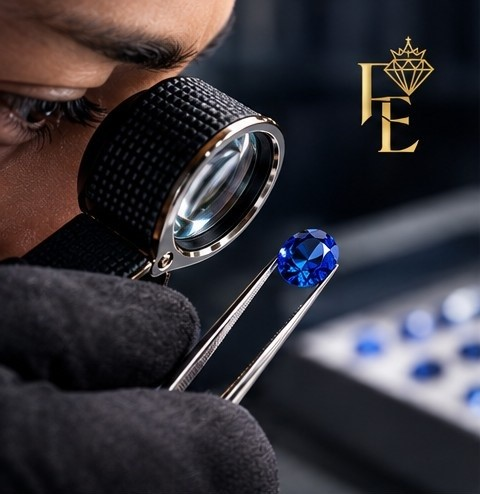
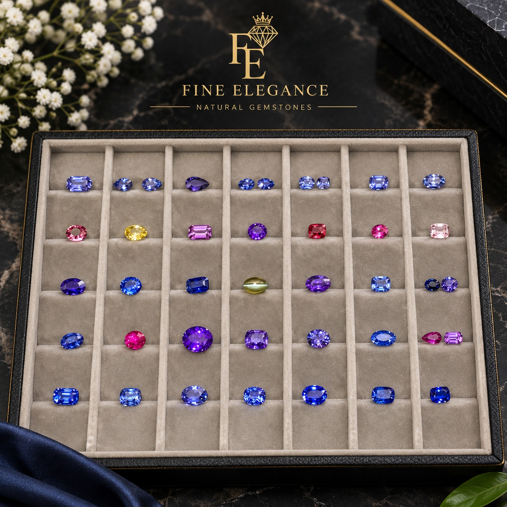
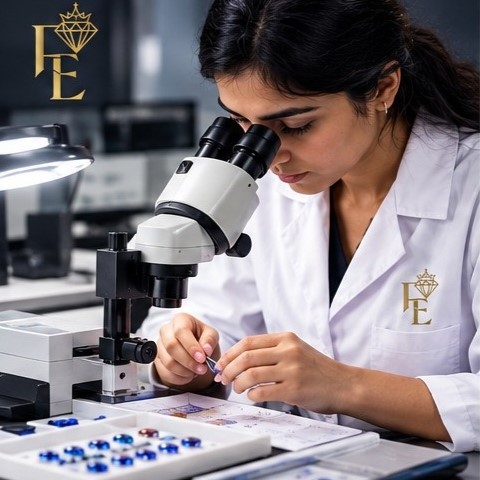
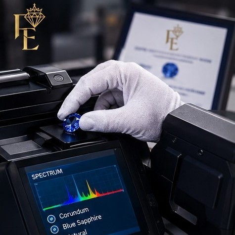

Every Gem Has a Story
Careful observation and professional gemstone identification are at the heart of Fine Elegance. We examine each gemstone with attention to its natural characteristics, beauty, and individuality.
Fine Elegance is a Sri Lankan gemstone business specializing in Ceylon sapphires, with a carefully selected range of precious and semi-precious gemstones available according to individual customer requirements.
With professional gemmological knowledge and a focus on quality, authenticity and personalized service, we connect customers with gemstones selected to suit their specific needs.

Sri Lanka is renowned worldwide for its exceptional sapphires and remarkable range of natural gemstone colors.
At Fine Elegance, our primary focus is sourcing and supplying Ceylon sapphires, including blue and other naturally occurring sapphire colors.
While sapphires are our specialty, Fine Elegance can also assist with sourcing other precious and semi-precious gemstones according to customer requirements.
View the collection →Beauty You Can Appreciate. Information You Can Trust.
At Fine Elegance, our goal is to build lasting relationships through honest communication, carefully selected gemstones, and attentive service.
We do not believe that every gemstone needs to be described with exaggerated promises.
Instead, we believe its natural beauty, documented characteristics, and individual character should speak for themselves.
From the first enquiry to selecting your gemstone, we aim to provide a refined and transparent experience.

Careful observation and professional gemstone identification are at the heart of Fine Elegance. We examine each gemstone with attention to its natural characteristics, beauty, and individuality.

Discover a carefully selected collection of Ceylon sapphires and fine precious and semi-precious gemstones, sourced with an appreciation for Sri Lanka's rich gem heritage.

Explore our selection of calibrated Sapphire pairs in a variety of shapes and sizes—carefully matched for harmony, balance, and jewellery design.

Gemology combines science, experience, and a deep appreciation for natural gemstones. At Fine Elegance, we approach every stone with professional care and attention to detail.

From carefully selected gemstones to refined presentation, every Fine Elegance piece is prepared with attention to detail—because exceptional gemstones deserve an exceptional experience.

Modern gem-testing techniques help us examine and understand the characteristics of gemstones, supporting informed evaluation and responsible presentation.
Choosing a gemstone is a personal experience. At Fine Elegance, we believe it should also be an experience built on confidence and trust.
We look beyond simply finding a gemstone. We consider its color, clarity, cut, character, and overall visual appeal before including it in our collection.
Our gemstone selection is supported by professional knowledge and understanding of gemstone characteristics.
We are connected to Sri Lanka’s renowned gemstone industry and focus particularly on Ceylon sapphires.
Our collection is built around gemstones that capture attention through their natural color, brilliance, character, and individuality.
We believe customers should have clear information about the gemstones they are considering, including relevant details regarding treatments, certification, and origin when available.
We understand that every customer has their own unique preferences. We take the time to understand what you are looking for and help you discover a gemstone suited to your preferences.
Based in Sri Lanka, Fine Elegance works with gemstone customers and jewellery professionals who are looking for carefully selected natural gemstones.
Our goal is to develop lasting relationships with customers, jewellery professionals and gemstone businesses around the world.
Our highlights area brings together gemstone presentation, lapidary work, jewellery and moments from our professional journey.
View highlights →
No:414/K/7
Pragathi mawatha
Kahathuduwa
Polgasowita
Sri Lanka